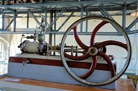
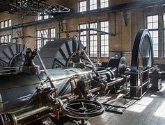
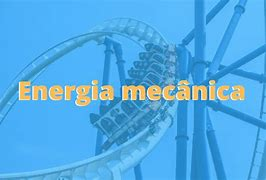

¿Qué es la energía mecánica?
La energía mecánica es la suma de la energía cinética y potencial de un sistema. Se utiliza en diversas aplicaciones, como en maquinaria y vehículos.La energía mecánica proviene de diversas fuentes y su capacidad para transformarse entre diferentes formas de energía la hace esencial en la física y la ingeniería. Desde fenómenos naturales hasta tecnología avanzada, la energía mecánica juega un papel clave en muchos procesos que nos rodean.
Aquí tienes más información sobre las fuentes de energía mecánica y cómo se utilizan:
La Gravedad
La gravedad es una fuerza omnipresente que no solo explica el comportamiento de los objetos en la Tierra, sino que también es fundamental para comprender el cosmos. Su estudio continúa siendo un área activa de investigación en la física, con implicaciones que abarcan desde la tecnología diaria hasta la exploración del universo.
El Movimiento de Fluidos
El movimiento de los fluidos es un área fascinante de estudio que combina principios de física, matemáticas e ingeniería. Su comprensión no solo nos ayuda a predecir y controlar flujos en aplicaciones prácticas, sino que también nos proporciona una visión más profunda de los procesos naturales que nos rodean. El movimiento de los fluidos es un fenómeno físico que describe cómo los líquidos y gases se desplazan y se comportan bajo diversas condiciones. Este campo de estudio, conocido como dinámica de fluidos, es esencial para comprender una amplia variedad de procesos en la naturaleza y en la ingeniería, desde el flujo de ríos hasta el diseño de aviones.

Las Fuerzas de Compresión y Tensión
La fuerza de compresión y la fuerza de tensión son dos tipos de fuerzas que actúan sobre los materiales y estructuras, afectando su comportamiento y resistencia. Ambas fuerzas son fundamentales en la ingeniería y la física, ya que determinan cómo los materiales responden a diferentes cargas y fuerzas. La comprensión de estas fuerzas es crucial para diseñar estructuras seguras y eficientes, así como para analizar el comportamiento de los materiales en diversas aplicaciones.
Máquinas y Motores
Las máquinas y motores son esenciales para la vida moderna, ya que permiten la realización de trabajo mecánico de manera eficiente. Su estudio y desarrollo continúan evolucionando, impulsando avances en tecnología y sostenibilidad. Las máquinas y motores son fundamentales en la conversión y uso de energía mecánica. Aquí te explico cómo funcionan y sus aplicaciones en diversas industrias.
Energía Solar y Térmica
La energía solar y la energía térmica son dos formas de energía renovable que desempeñan un papel crucial en la sostenibilidad y la transición hacia fuentes de energía más limpias. Aquí te explico cada una en detalle.
La energía solar y térmica son componentes esenciales en la búsqueda de soluciones energéticas sostenibles. Su desarrollo continuo y la integración en sistemas de energía más amplios pueden contribuir significativamente a la reducción de la huella de carbono y a un futuro más sostenible.
Aplicaciones de la Energía Mecánica

La energía mecánica tiene una amplia gama de aplicaciones en diversos campos, desde la vida cotidiana hasta la industria y la tecnología. Aquí te presento algunas de las aplicaciones más relevantes:
1. Transporte
Automóviles y Motocicletas: Los motores convierten energía química (combustible) en energía mecánica, permitiendo el movimiento de los vehículos.
Trenes: Utilizan energía mecánica generada por locomotoras eléctricas o de combustión interna para mover vagones.
Aeronáutica: Los motores de aviones convierten combustible en energía mecánica para propulsar la aeronave.
2.Maquinaria Industrial
Convección y Transporte: Sistemas de cintas transportadoras utilizan energía mecánica para mover productos y materiales en fábricas.
Herramientas Eléctricas: Taladros, sierras y destornilladores eléctricos convierten energía eléctrica en energía mecánica para realizar trabajos de construcción y reparación.
Robótica: Robots industriales utilizan motores y sistemas mecánicos para realizar tareas automatizadas.
3.Generación de Electricidad
Plantas Hidroeléctricas: La energía potencial del agua almacenada en represas se convierte en energía cinética al caer, haciendo girar turbinas que generan electricidad.
Energía Eólica: Los aerogeneradores convierten la energía cinética del viento en energía mecánica, que se transforma en electricidad.
4.Sistemas de Calefacción y Refrigeración
Bombas de Calor: Utilizan energía mecánica para mover refrigerantes en sistemas de calefacción y refrigeración, facilitando el intercambio de calor.
Ventiladores y Compresores: Utilizan energía mecánica para mover aire o comprimir gases, aplicándose en sistemas de climatización y refrigeración.
5.Construcción y Edificación
Grúas: Utilizan energía mecánica para levantar y mover cargas pesadas en sitios de construcción.
Excavadoras: Convierten energía mecánica en movimiento para excavar y mover tierra.
6.Dispositivos Domésticos
Electrodomésticos: Máquinas de lavar, aspiradoras y licuadoras convierten energía eléctrica en energía mecánica para realizar tareas específicas.
Juguetes: Muchos juguetes mecánicos, como coches a cuerda o muñecas que caminan, utilizan energía mecánica almacenada en resortes o motores.
7. Deportes y Ocio
Equipamiento Deportivos: Bicicletas, patines y otros equipos deportivos utilizan la energía mecánica generada por el movimiento humano.
Juegos Mecánicos: Montañas rusas y otras atracciones de parques temáticos utilizan energía potencial y cinética para ofrecer entretenimiento.
Conclusión
La energía mecánica es esencial en prácticamente todos los aspectos de la vida moderna, facilitando el transporte, la producción industrial, la generación de electricidad y muchas otras actividades cotidianas. Su eficiencia y versatilidad continúan impulsando la innovación en diversas áreas. Si deseas más información sobre alguna aplicación específica, ¡hazmelo saber!
Ventajas
- Amplia aplicación en la industria.
- Puede ser convertida a otras formas de energía.
Desventajas
- Depende de recursos naturales.
- Puede generar contaminación si no se gestiona adecuadamente.